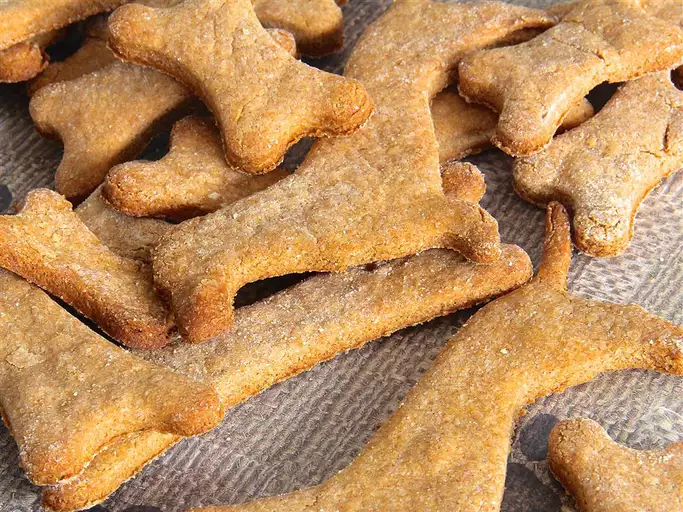

Birthday Bones

Celebrate your best pup's birthday right by baking
them these delicious treats!
With a few simple ingredients, you can say "I forgive you
for eating my couch. Please eat these instead."
Ingredients
- 2 cups whole wheat flower
- 1 tablespoon baking powder
- 1 cup unsalted natural peanut butter
- 1 cup skim milk
Steps
- Preheat the oven to 375 degrees F (190 degrees C).
Grease cookie sheets.
Stir together the flour and baking powder;
set aside.
- In a medium bowl, mix together the peanut butter
and milk. Stir in the flour mixture until well
blended. Turn out dough onto a lightly floured
surface and knead until smooth.
Roll out to 1/4 inch thickness and cut into shapes
using cookie cutters. Place 2 inches apart onto the
prepared cookie sheets.
- Bake for 20 minutes in the preheated oven,
or until lightly brown. Remove from cookie sheets
to cool on wire racks.
Recipe Source: All Recipes